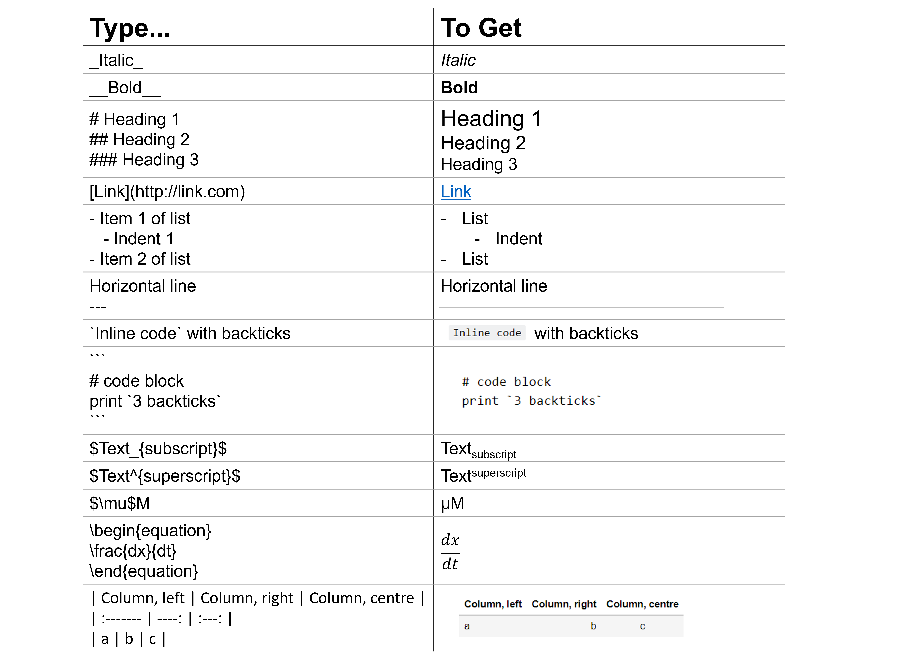

Welcome to Python for Biochemists#
Why Python?#
Python is a programming language that can be used to analyse biophysical and biochemical data, to analyse protein/DNA/RNA sequences, to process images, to build mathematical models of biochemical systems, to perform biomolecular simulations …
Python is developed under an open source license, which makes it free to use and distribute. Its development is driven by the community.
It is a high-level programming language, written in a form that is close to our human language. It makes is easier for the programmer to write, modify, and debug the code.
It is portable: the same source code works in different environments (e.g. operating systems).
Python provides extensive libraries. Many high-use programming tasks have already been scripted into these libraries which reduces length of code to be written significantly. Examples include NumPy, pandas, matplotlib, and SciPy.
{kind=link}
The wide base of users and active developers has resulted in a rich online support (documentation and forums) to encourage development and the continued adoption of the language. Google it!
Alternatively, use AI code assistant tools, like ChatGPT API, GitHub Copilot, Replit Ghostwriter, or Amazon CodeWhisperer, to help you write your code. But be aware, sometimes, AI assistants do not give what you need: always read and understand the code they suggest!
Why Jupyter Notebooks?#
Jupyter notebooks (.ipynb files) are a presentation layer. They allow us to create and share documents that contain cells. There are three types of cell:
live code
explanatory text, equations, tables, and figures using Markdown
output in Raw NBConverter.
Each Jupyter notebook uses a kernel. The kernel runs our code cells in a specific programming language, in our case, Python. Any output is displayed. The kernel’s state persists over time and between cells. For example, if a library has been imported in one cell, then that library will be available for the whole notebook. We can reset the kernel by restarting it.
In code cells, lines with # are comment lines. They are not evaluated. Comments are used to explain what the code is doing.
Markdown#
Markdown is a language that makes it very easy to write formatted content. It uses very easy-to-remember syntax. The following cheat sheet can help when writing explantory text, equations, and tables in Markdown cells:
{kind=link}
Objectives#
These notes introduce Python Jupyter notebooks to biochemists. We hope they enable you to:
recognise programming fundamentals suchs as variables, loops, logic statements, functions …
use Jupyter notebooks for writing (including proper formatting and indenting) and documenting your Python code
define and use variables in Python
identify Python data types
use indexing and slicing for sequence-based data types in Python
write loops and logic statements in Python
create simple functions with parameters in Python
learn how to use lists and dictionaries in Python
explore Python’s large library collection
visualize data using Matplotlib
learn how to read Excel files using Pandas
…